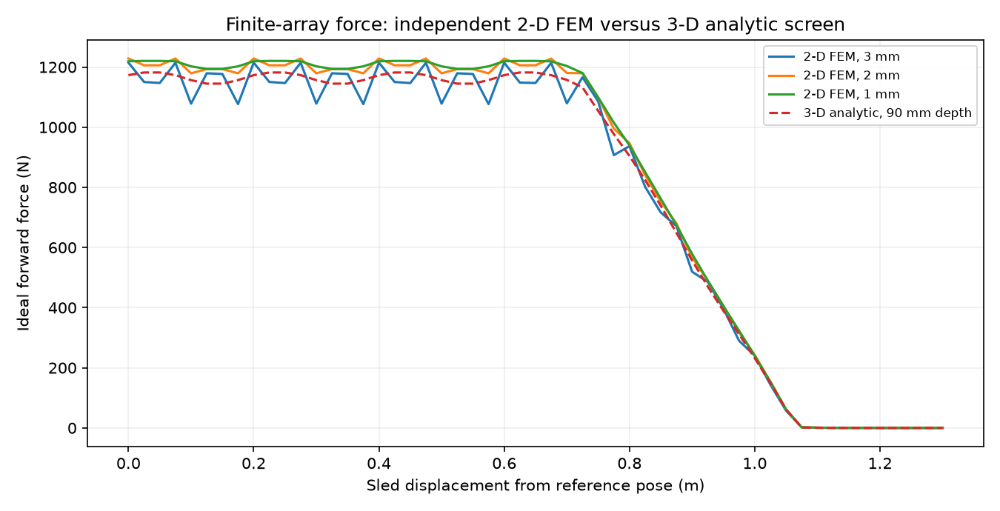
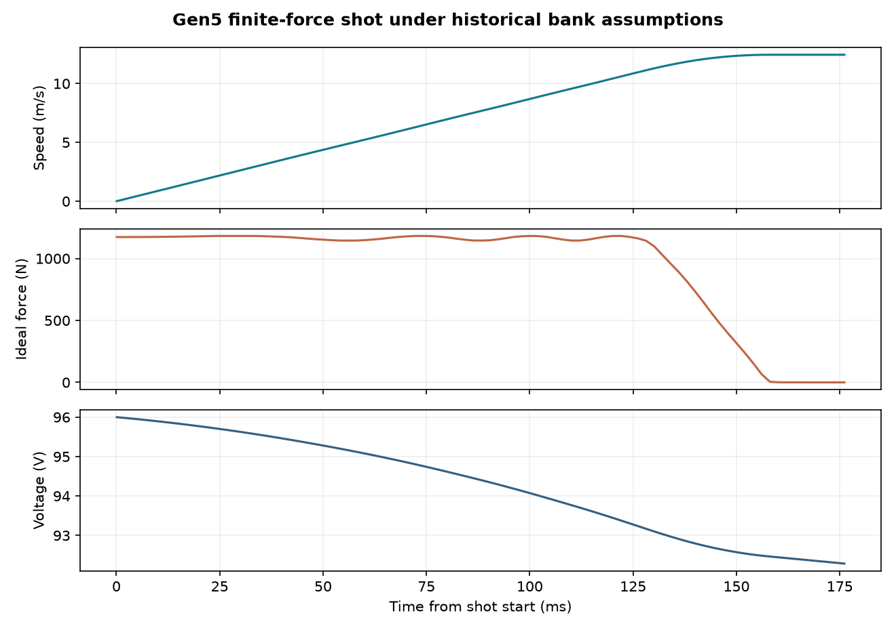
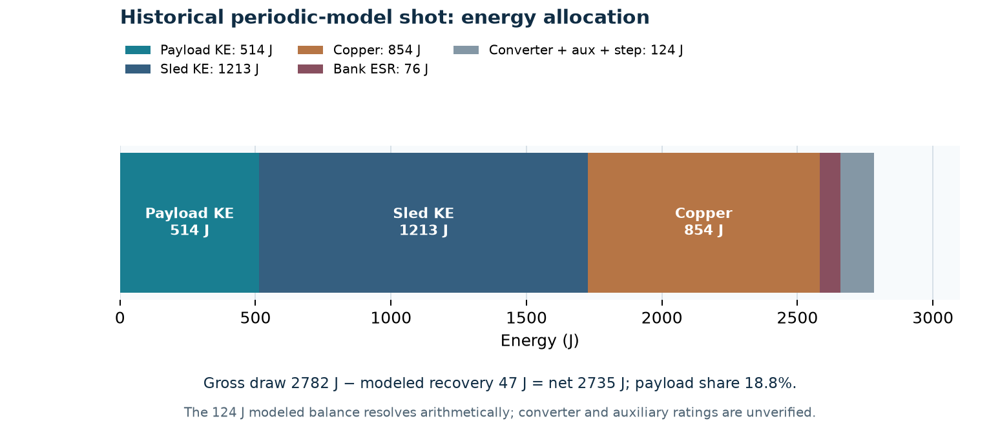
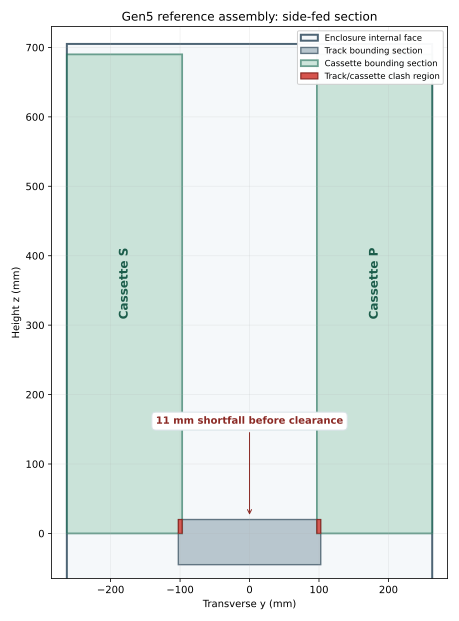
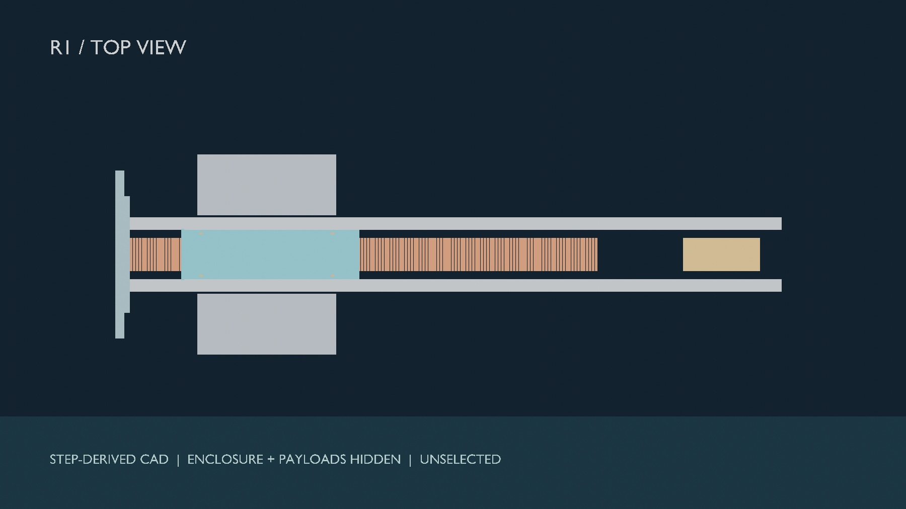

The historical speed is challenged.
The old 16.029 m/s shot assumes periodic force across the powered stroke. A finite-array 3-D analytic screen gives 1.042 kJ ideal work and 12.448 m/s under optimal phase, without circuit losses. An independently coded depth-resolved 3-D force formulation agrees under shared ideal inputs; a 2-D finite-element screen gives 1.082 kJ. None is a motor measurement.




The reference placement fails before release.
A 205 mm track and two 166 mm cassettes require 537 mm across a 526 mm inner enclosure. FreeCAD and CadQuery exact-solid checks find 32,915 mm³ of track/cassette overlap per side. The CAD images depict the sourced STEP solids; the numeric verdict comes from the solid checks.




A full twelve-shot case has not closed.
The matched mission comparison includes springs, host manoeuvres, onboard propulsion, orbital transport and VOLLEY under named assumptions. No sampled twelve-shot host campaign delivers the complete reference manifest. That result does not prove every possible mission is infeasible.
The program still needs a named spacecraft and provider interface, complete installed budgets, uncertainty and moving-contact closure, independent review and representative multi-shot physical testing.